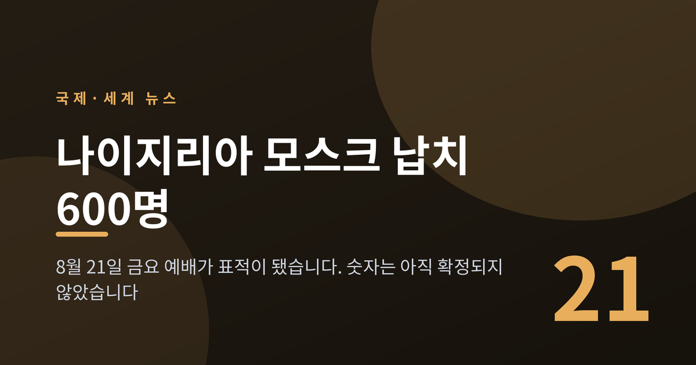
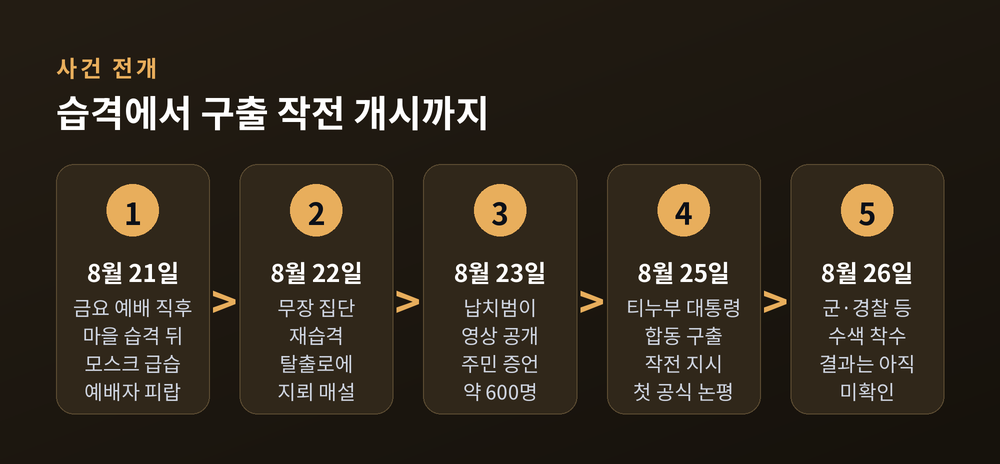
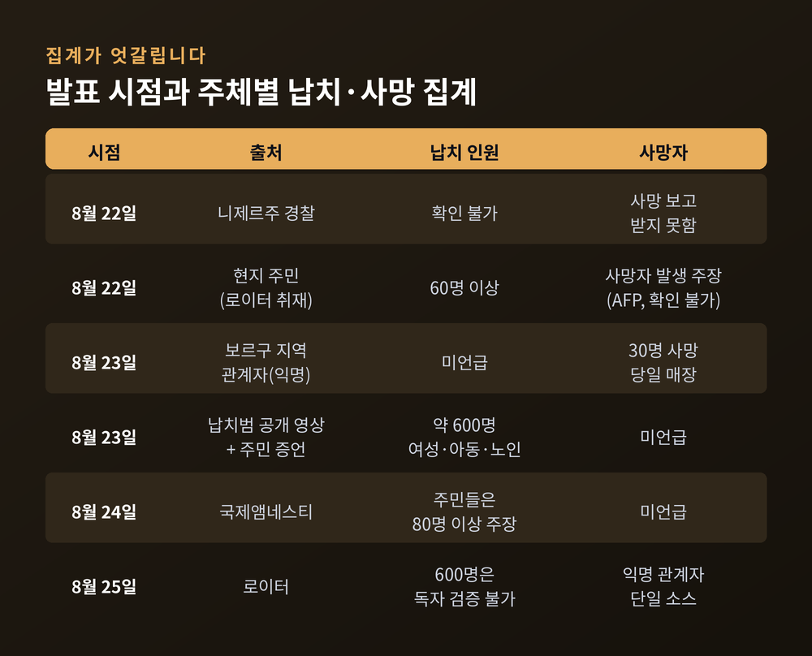
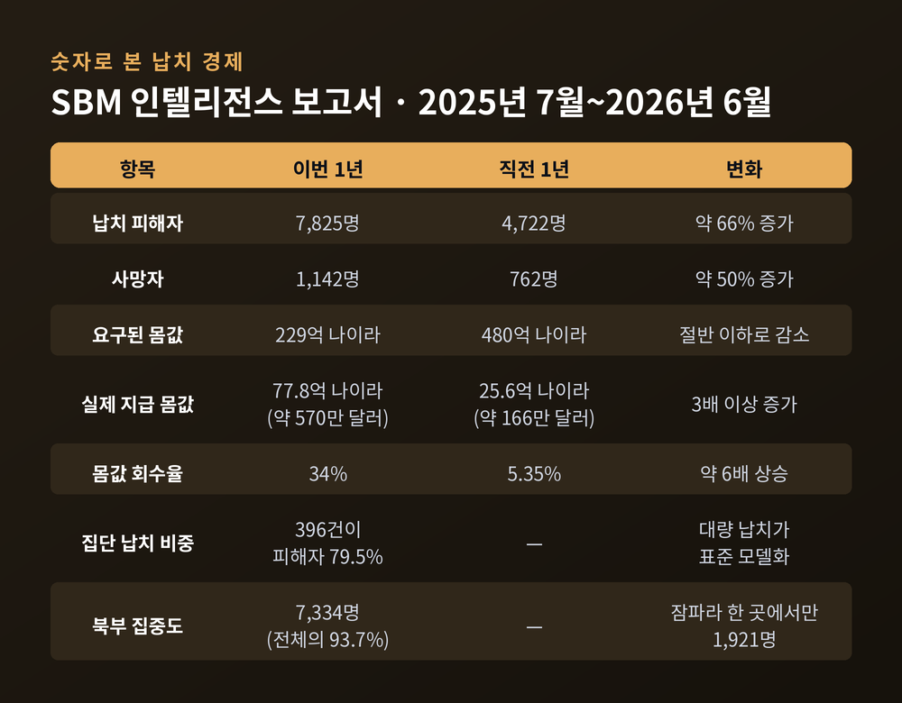
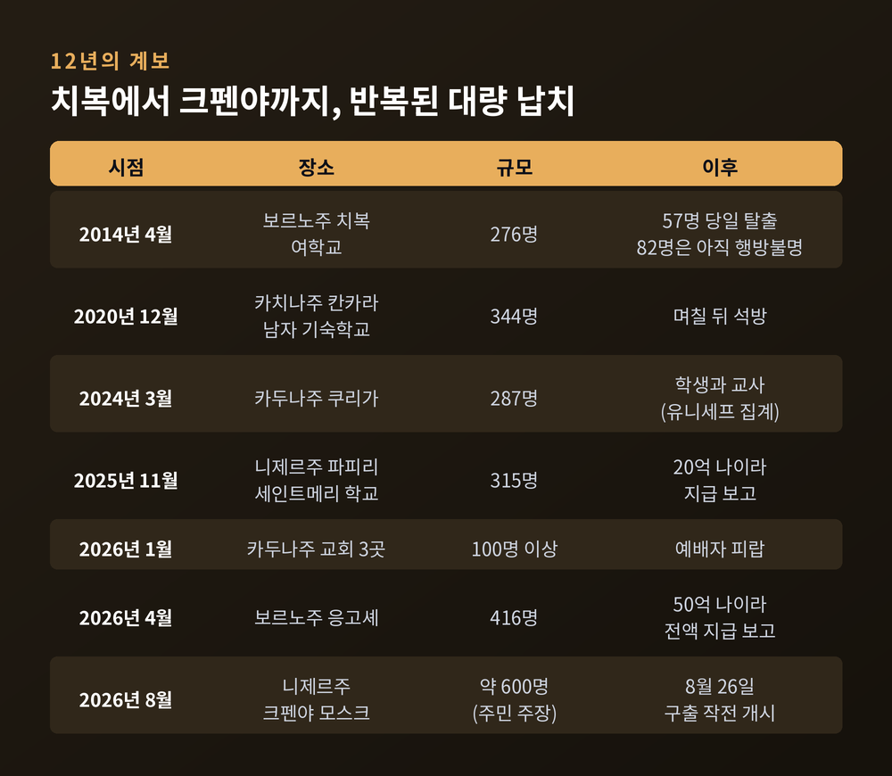
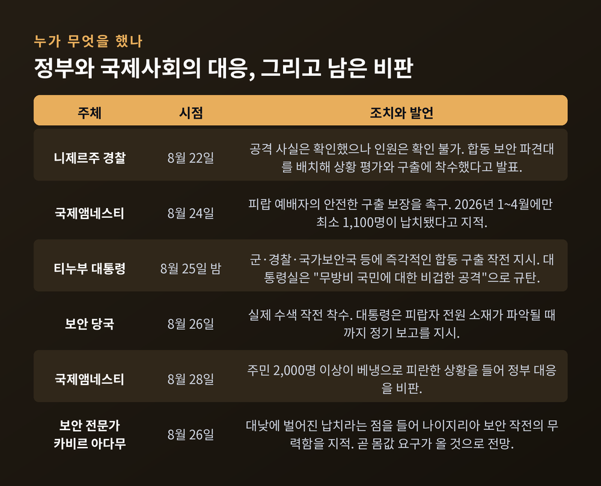

나이지리아 모스크 납치 600명, 금요 예배가 표적이 된 이유
이번 글에서는 2026년 8월 21일 나이지리아 니제르주에서 벌어진 집단 납치 사건을 정리해 보겠습니다. 숫자가 크고, 그 숫자마저 아직 확정되지 않은 사건입니다. 무슨 일이 있었는지, 왜 이런 일이 되풀이되는지 차례로 짚어보겠습니다.

금요 예배가 끝나자마자 벌어진 일
현지시간 8월 21일 금요일 오후 2시 무렵이었습니다. 나이지리아 중북부 니제르주 보르구 지방정부구역, 데카라 지구의 크펜야 모스크였습니다.
무장 집단은 곧바로 모스크로 들어가지 않았습니다. 먼저 인근 기단자나와 크펜야 마을을 습격했고, 그다음 예배가 막 끝난 모스크를 덮쳤습니다. 니제르주 경찰 대변인 와시우 아비오둔이 이튿날 로이터에 확인한 순서입니다.
끌려간 사람들은 대부분 여성과 아동, 노인이었다고 주민들은 말합니다. 저항할 수 없는 사람들이 한자리에 모이는 시간과 장소가 정확히 겨냥된 셈입니다.
폭력은 하루로 끝나지 않았습니다. 무장 집단은 다음 날인 22일 토요일에도 돌아와 사람들을 더 붙잡아 갔습니다. 주민 압둘라히 아마드는 이들이 군 병력 투입을 예상하고 "협상 카드"를 늘리려 했다고 증언했습니다. 마을을 빠져나가는 도로에는 지뢰가 묻혔습니다. 피란하던 한 가족의 차량이 그 지뢰를 밟아 숨졌다는 증언도 나왔습니다.
"모두가 공포 속에 살고 있습니다." 아마드가 알자지라에 남긴 말입니다.
데카라 전통 지도자 아부바카르 우마르에 따르면, 이후 최소 2,000명이 국경 너머 베냉으로 피란했습니다. 니제르주는 나이지리아 서쪽 끝, 베냉과 맞닿은 주입니다.

600명이라는 숫자는 아직 확정된 것이 아닙니다
이 사건을 다룰 때 가장 조심해야 할 지점입니다. 피해 규모는 보도가 나올 때마다 달라졌습니다.
22일 토요일, 경찰은 납치가 있었다는 사실은 확인했지만 인원은 확인할 수 없다고 했습니다. 같은 날 주민들은 로이터에 60명 이상이 끌려갔다고 말했습니다. 24일 국제앰네스티는 주민들이 80명 이상을 언급한다고 전했습니다.
그리고 23일 일요일, 납치범들이 영상을 공개하면서 숫자가 단번에 뛰었습니다. 주민들이 세어본 규모는 약 600명이었습니다.
로이터는 이 600명을 독자적으로 검증하지 못했다고 분명히 밝혔습니다. 다만 사실로 확인된다면 최근 몇 년 나이지리아에서 벌어진 가장 큰 집단 납치 가운데 하나가 될 것이라고 덧붙였습니다.
사망자 집계도 엇갈립니다. 경찰은 처음에 사망 보고를 받지 못했다고 했습니다. 이후 보르구 지역 관계자 한 명이 로이터에 30명이 숨져 23일 매장됐다고 말했습니다. 익명의 단일 소스입니다. 니제르주 정보담당관 오베드 나나는 실종자 수를 확인 중이라며 이렇게 말했습니다. "그런 정보가 얼마나 민감한지 알기 때문에 너무 추측하고 싶지 않습니다."
숫자를 단정하지 않는 편이 옳습니다. 다만 숫자가 흔들린다고 해서 사안이 가벼워지지는 않습니다.

납치범이 영상을 공개한 이유
8월 23일 일요일, 페이스북과 왓츠앱에 영상 하나가 올라왔습니다. 숲이 우거진 곳에 앉아 있는 대규모 인원, 그리고 그들을 둘러싼 무장 남성들이 담겼습니다. 배경에서는 아이들 울음소리가 이어졌습니다.
무장 대원 한 명이 하우사어로 인질 가족들에게 말합니다. 가족을 알아보라는 내용이었습니다. 로이터는 이 말을 이렇게 옮겼습니다. "이들은 모두 당신들의 사람입니다."
주민 네 명이 영상 속 사람들의 신원을 확인했다고 로이터에 밝혔습니다. 이브라힘 아부바카르는 "제가 아는 사람 13명을 확인했다"고 말했습니다. 압둘무탈립 무카다스 딘디는 어르신과 친척, 아내와 자녀를 영상에서 봤다고 했습니다.
로이터는 촬영 날짜와 정확한 장소를 검증하지 못했습니다. 다만 8월 23일 이전에 같은 영상이 온라인에 올라온 흔적은 없다고 확인했습니다.
이 영상이 왜 공개됐는지에 대한 해석은 대체로 일치합니다. 아부자에 있는 보안 전문가 카비르 아다무는 로이터에 배후를 단정할 수 없다면서도, 영상을 올린 세력이 곧 접촉해 몸값을 요구할 것으로 본다고 말했습니다. 영상은 협박이자, 협상의 개시 신호였다는 뜻입니다.
배후는 아직 공식적으로 지목되지 않았습니다. 생존자 지브릴 아마드는 AFP에 '라쿠라와'라는 무장 조직을 지목했습니다. 그는 공격 도중 '마무다'라는 또 다른 조직이 개입해 납치범들과 교전했고, 덕분에 일부가 탈출했다고 말했습니다. 연방 하원의원 자파루 모하메드도 두 조직의 노선이 달랐다고 설명했습니다. 다만 이 증언들은 독립적으로 확인되지 않았습니다.
여기서 한 가지는 분명히 해둘 필요가 있습니다. 피해자도 가해자로 지목된 쪽도 모두 같은 지역 사회 안에 있습니다. 이 사건을 특정 종교나 민족 집단 전체의 문제로 옮겨 붙이는 것은 사실과 다릅니다.
몸값이 '되는 사업'이 되어버렸습니다
왜 이런 일이 반복될까요. 돈의 흐름을 보면 답이 보입니다.
나이지리아 리서치 기관 SBM 인텔리전스가 2026년 8월 내놓은 보고서 「나이지리아 납치 경제의 포획」은 2025년 7월부터 2026년 6월까지 1년을 집계했습니다.
납치 피해자는 7,825명이었습니다. 직전 1년의 4,722명에서 약 66% 늘었습니다. 사망자는 762명에서 1,142명으로 늘었습니다. 사건은 더 잦아졌고, 더 치명적이 됐습니다.
주목할 대목은 몸값입니다. 예전엔 요구액만 컸고 실제 지급은 적었습니다. 지금은 반대입니다. 요구액은 480억 나이라에서 229억 나이라로 절반 이하가 됐는데, 실제로 지급된 돈은 25억 6천만 나이라에서 77억 8천만 나이라로 세 배 이상 늘었습니다. 회수율은 5.35%에서 34%로 뛰었습니다.
돈은 골고루 흩어지지 않았습니다. 보코하람의 한 분파와 연계 조직이 단 8건으로 전체 지급액의 90%인 70억 나이라를 가져갔습니다. 반면 조직화되지 않은 도적단은 146건에서 요구했지만 회수율이 5.3%에 그쳤습니다. 조직력이 있는 쪽일수록 돈을 관철시킨다는 뜻입니다.
대형 사건 두 건이 전체 몸값의 대부분을 만들었습니다. 2026년 4월 보르노주 응고셰에서 416명이 납치됐고 요구액 50억 나이라가 전액 지급된 것으로 보고됐습니다. 2025년 11월 니제르주 파피리의 세인트메리 학교에서는 아동과 교직원 315명이 끌려갔고 20억 나이라가 지급된 것으로 전해졌습니다.
피해는 북부에 몰려 있습니다. 전체 피해자의 93.7%인 7,334명이 북부에서 나왔습니다. 잠파라주 한 곳에서만 1,921명, 전국의 4분의 1 수준입니다. 그리고 전체 1,411건 중 396건이 5명 이상 집단 납치였는데, 이 396건이 피해자의 79.5%를 만들어냈습니다. 소규모 인질극이 아니라 대량 납치가 이미 표준 모델이 된 것입니다.
가장 무거운 대목은 따로 있습니다. 최소 6건에서는 몸값을 지불한 뒤에도 피해자가 살해됐습니다.

치복에서 크펜야까지, 12년의 계보
이 사건은 갑자기 튀어나온 것이 아닙니다.
2014년 4월 보르노주 치복에서 여학생 276명이 끌려갔습니다. 그날 밤 57명이 탈출했고, 2016년과 2017년에 100명 넘게 풀려났습니다. 그러나 82명은 아직도 행방을 모릅니다. 12년이 지났습니다.
2020년 12월 카치나주 칸카라에서 344명, 2024년 3월 카두나주 쿠리가에서 287명이 납치됐습니다. 치복 이후 나이지리아에서 벌어진 대형 학교 납치는 20건이 넘고, 영향을 받은 학생은 1,700명 이상으로 집계됩니다.
2026년 들어서는 표적이 더 넓어졌습니다. 1월에는 카두나주 교회 세 곳에서 100명 이상이 끌려갔습니다. 2월에는 피랍 예배자 177명 중 80명이 탈출해 돌아왔습니다. 그리고 8월, 금요 예배 중인 모스크가 표적이 됐습니다.
학교에서 교회로, 교회에서 모스크로. 신앙과 관계없이 '사람이 모이는 곳'이면 표적이 되고 있다는 뜻입니다.

정부는 나흘 뒤에 움직였습니다
정부 대응의 시차도 쟁점입니다.
사건은 8월 21일 금요일에 벌어졌습니다. 22일 경찰은 합동 보안 파견대를 배치했다고 발표했습니다. 그러나 볼라 티누부 대통령이 공개적으로 구출 작전을 지시한 것은 25일 화요일 밤이었습니다. 실제 작전은 26일 수요일에 시작됐습니다.
그사이 23일에 납치범 영상이 공개되며 여론이 끓었습니다.
티누부 대통령은 소셜미디어에 군과 경찰, 국가보안국을 비롯한 모든 관련 기관에 즉각적인 합동 구출 작전을 지시했다고 밝혔습니다. 대통령실은 이번 공격을 "무방비 상태의 국민에 대한 비겁한 공격"으로 규탄했습니다. 대통령은 유족과 피랍자 가족을 향해 "당신들은 혼자가 아닙니다"라고 적었습니다. 보안 수뇌부에는 피랍자 전원의 소재가 파악될 때까지 정기 보고를 지시했습니다.
비판도 만만치 않습니다. 카비르 아다무는 이번 납치가 대낮에 벌어졌다는 점을 들어, 나이지리아 보안 작전이 얼마나 무력한지를 보여준다고 평가했습니다.
국제앰네스티는 24일 성명에서 피랍 예배자들의 안전한 구출을 보장하라고 촉구했습니다. 앰네스티는 2026년 1월부터 4월까지만 최소 1,100명이 납치됐다고 밝히며, 피랍자들이 고문과 굶주림, 성폭력에 노출되는 경우가 빈번하다고 지적했습니다. 28일에는 2,000명 넘는 주민이 베냉으로 피란한 상황을 들어 정부를 비판했습니다.

2027년 1월 대선이라는 변수
이 사건이 정치적으로 민감한 이유가 있습니다.
나이지리아 대선은 2027년 1월 16일, 총선과 함께 치러집니다. 후보는 19명이고 티누부 대통령이 재선에 도전합니다. 선거운동은 8월 19일 시작됐습니다. 사건이 벌어지기 이틀 전입니다.
생활비와 인플레이션, 그리고 치안이 이번 선거를 지배할 쟁점으로 꼽힙니다. 2023년 대선 후보였던 피터 오비는 정부가 집단 납치를 일상적인 일처럼 다루면서 "테러를 정상화했다"고 공격했습니다.
정부로서는 구출 성과를 보여줘야 하는 압력이 커졌습니다. 실제로 8월 초 두 개 주 합동 작전으로 308명을 구출했다고 발표했고, 10일에는 북서부에서 33명을 구출했습니다. 7월에는 오요주에서 50일 넘게 억류됐던 학생과 교사 40여 명을 구출하며 티누부 대통령은 "어떤 돈도 지급되지 않았다"고 강조했습니다.
그러나 그 발표 바로 다음 날, 같은 주에서 초등학교 교장이 납치됐습니다. 납치범이 요구한 금액은 3천만 나이라였습니다.
앞으로 무엇을 지켜봐야 하는가
세 가지를 보시면 좋겠습니다.
첫째, 몸값 요구가 실제로 접수되는지입니다. 요구가 오면 규모와 협상 방식이 드러납니다. 8월 30일 현재까지 이번 사건의 몸값 요구가 공개적으로 확인된 바는 없습니다.
둘째, 구출 성과입니다. 26일 시작된 작전의 결과는 아직 확인되지 않았습니다. 과거 사례를 보면 수개월이 걸리기도 했습니다.
셋째, 돈줄입니다. SBM은 몸값 추적과 차단을 병행하지 않으면 납치가 범죄 산업을 넘어 테러 자금 조달 장치로 굳어질 수 있다고 경고했습니다. 보안 전문가들은 이미 몸값이 정규 은행망을 타고 흐르는 정황을 지적하고 있습니다.
한계도 인정해야 합니다. 이 글에 담긴 숫자 상당수는 아직 검증 중이거나 단일 소스에 기댄 것입니다. 며칠 뒤면 달라질 수 있습니다.
정리하면 이렇습니다. 이번 사건은 우발적 범죄가 아니라, 오래 쌓인 구조가 드러난 장면에 가깝습니다. 국경을 넘나드는 무장 조직, 몸값이 실제로 걷히는 시장, 대낮에도 닿지 않는 치안, 그리고 선거를 앞둔 정치가 한자리에서 겹쳤습니다.
숫자는 계속 바뀔 것입니다. 하지만 바뀌지 않는 사실이 하나 있습니다 — 지금도 숲 어딘가에 어머니와 아이들이 앉아 있습니다.
600명이 정확한 숫자냐고 물으신다면, 아직 모른다고 답할 수밖에 없습니다. 다만 한 명이라도 그곳에 있다면, 그것으로 이미 충분히 심각한 일입니다.